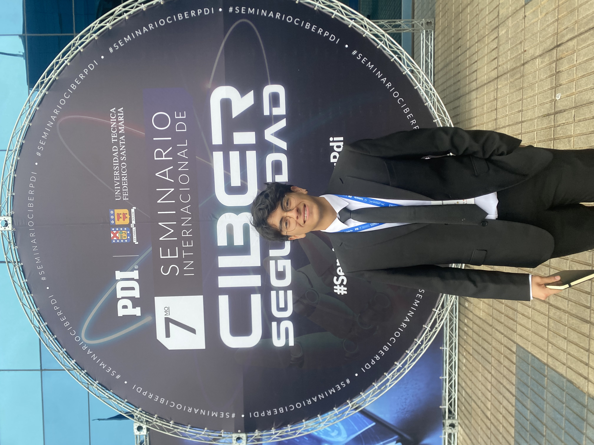

Soy alumno de la Universidad Andres Bello para la carrera de ingenieria en computacion e informatica estando en tercer año
experciencia trabajando con SQL server y c# para una empresa de alimentos durante el inicio del año 2024 y mi objetivo es especializarme en lo ya aprendido o aprender sobre ciberseguridad.
